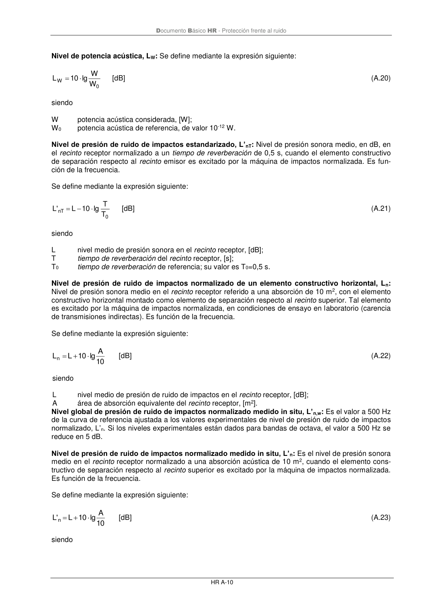

DB-HR Protección frente al ruido · edición 2019-12-20 · capa oficial
Documento DB-HR-oficial · SHA-256 del PDF a67baeca5138bb1f121f797d23a79a4557bd9ac4abacd954024893e05411eeab
Copia fiel del PDF fuente · Fuente oficial
Ficha de la disposición en la fuente oficial
Formatos: JSON del segmento · Markdown
Documento Básico HR - Protección frente al ruido HR A-10 Nivel de potencia acústica, LW: Se define mediante la expresión siguiente: 0 W W W lg 10 L = [dB] (A.20) siendo W potencia acústica considerada, [W]; W0 potencia acústica de referencia, de valor 10-12 W. Nivel de presión de ruido de impactos estandarizado, L’nT: Nivel de presión sonora medio, en dB, en el recinto receptor normalizado a un tiempo de reverberación de 0,5 s, cuando el elemento constructivo de separación respecto al recinto emisor es excitado por la máquina de impactos normalizada. Es fun- ción de la frecuencia. Se define mediante la expresión siguiente: 0 nT T T lg 10 L 'L − = [dB] (A.21) siendo L nivel medio de presión sonora en el recinto receptor, [dB]; T tiempo de reverberación del recinto receptor, [s]; T0 tiempo de reverberación de referencia; su valor es T0=0,5 s. Nivel de presión de ruido de impactos normalizado de un elemento constructivo horizontal, Ln: Nivel de presión sonora medio en el recinto receptor referido a una absorción de 10 m2, con el elemento constructivo horizontal montado como elemento de separación respecto al recinto superior. Tal elemento es excitado por la máquina de impactos normalizada, en condiciones de ensayo en laboratorio (carencia de transmisiones indirectas).Es función de la frecuencia. Se define mediante la expresión siguiente: 10 A lg 10 L Ln + = [dB] (A.22) siendo L nivel medio de presión de ruido de impactos en el recinto receptor, [dB]; A área de absorción equivalente del recinto receptor, [m2]. Nivel global de presión de ruido de impactos normalizado medido in situ, L’n,w: Es el valor a 500 Hz de la curva de referencia ajustada a los valores experimentales de nivel de presión de ruido de impactos normalizado, L’n. Si los niveles experimentales están dados para bandas de octava, el valor a 500 Hz se reduce en 5 dB. Nivel de presión de ruido de impactos normalizado medido in situ, L’n: Es el nivel de presión sonora medio en el recinto receptor normalizado a una absorción acústica de 10 m2, cuando el elemento cons- tructivo de separación respecto al recinto superior es excitado por la máquina de impactos normalizada. Es función de la frecuencia. Se define mediante la expresión siguiente: 10 A lg 10 L 'L n + = [dB] (A.23) siendo
